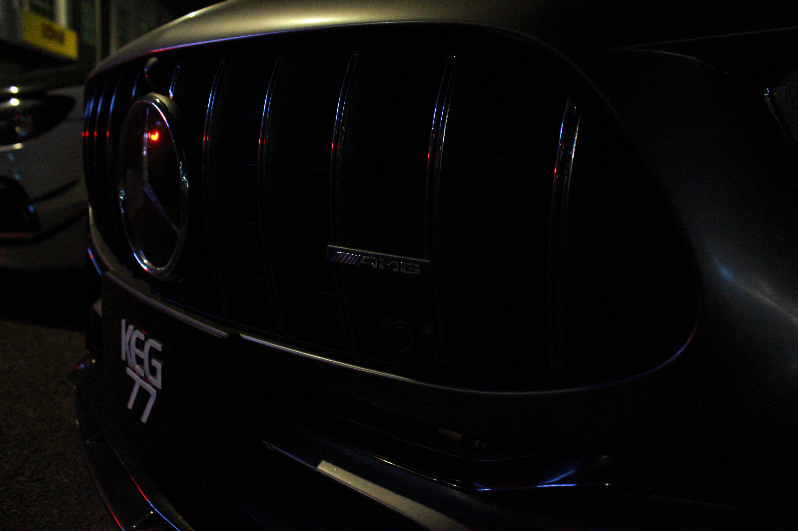
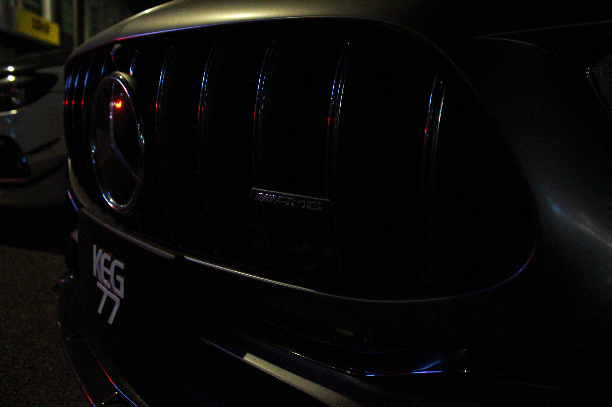
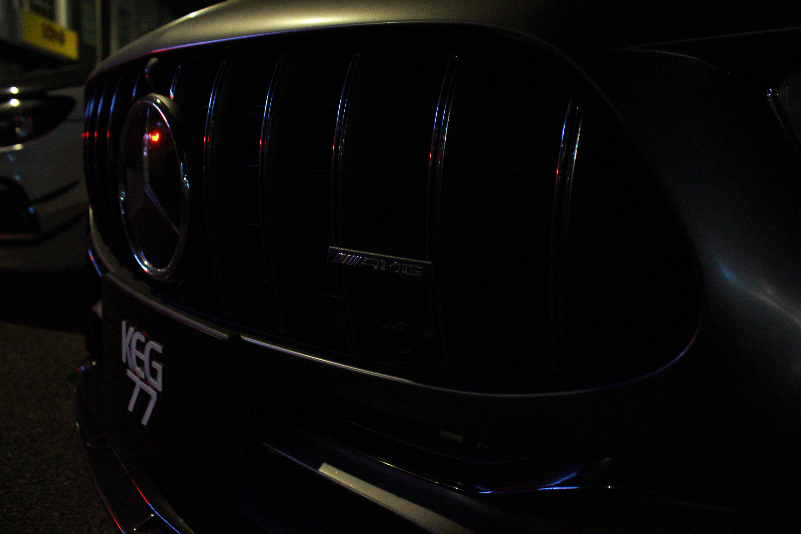

Gallery
 



Where Memories Live: A Photographer’s Path
NAME: AHMAD NAQIUDDIN BIN AZMAN @ RUAZMAN
AGE: 22 YEARS OLD
INSTITUTION: UNIVERSITY OF MALAYSIA PERLIS
PROGRAMME: UR6321001 - NEW MEDIA COMMUNICATION
MATRIC: 231422605
My name is Ahmad Naqiuddin, and I am a dedicated photographer who loves capturing the beauty of real moments. My interest in photography began with a simple curiosity about how light, color, and emotion come together in a picture. Over the years, I’ve developed my own style that focuses on telling meaningful stories through the lens. Whether I’m photographing people, places, or everyday life, I always try to create images that speak to the heart.
My work includes a mix of portraits, landscapes, and candid shots, each one showing my attention to detail and love for the craft. I’m inspired by the world around me—by the small moments that often go unnoticed, and by the people I meet along the way. Through my photos, I hope to help others see the world in a different and more thoughtful way. For me, photography is not just about taking pictures—it’s about capturing feelings, sharing stories, and creating connections through powerful images.
One of my biggest dreams is to become a wildlife photographer. I’ve always been fascinated by animals and the natural world, and I believe that wildlife photography is a powerful way to raise awareness about nature and conservation. I want to travel, explore wild places, and capture the beauty and behavior of animals in their natural habitats. It’s a challenging path, but I’m excited to keep learning and growing as I work toward that goal.

Let's get in touch and talk about the future together.